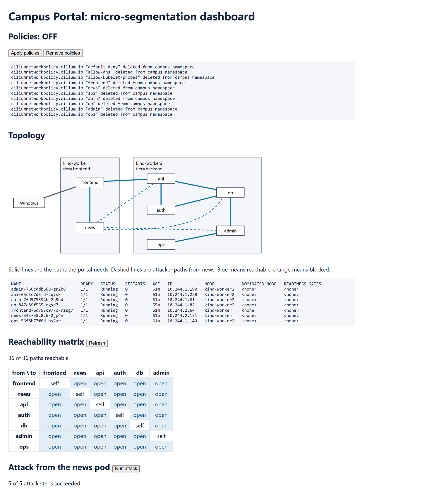

Chapter 7. Build your dashboard
By the end of this chapter you have a control panel for the rest of the project, a web page at http://localhost:5050 that runs in WSL. It shows whether the policies are on, which of the 36 paths between your services are open, how far the attack gets and what Hubble dropped. On the flat network you have now, it must report 36 of 36 paths reachable. Plan on four to six hours in two sittings. In the first you write the back end, dashboard/app.py, and test each of its routes from the terminal. In the second you write the page, dashboard/index.html, and open it in the browser.
The dashboard has two halves. The back end is a Python program that does the work, running kubectl and hubble and sending requests to the portal. The page is what you look at, and it asks the back end for data. They talk in JSON, a text format for data made of lists and name-value pairs, which looks much like a Python list or dictionary. Each address the back end answers on, such as /api/matrix, is called a route, and each route is one Python function.
Step 1. Write dashboard/app.py
The back end holds every command the dashboard runs. Writing it first lets you test each piece from the terminal before any web page is involved, so when something fails you know which side to look at.
In the Ubuntu terminal, make the folder and open a new file in VS Code.
mkdir -p ~/microseg/dashboard
code ~/microseg/dashboard/app.pymkdir -p creates the dashboard folder inside your project, and code opens the new file in VS Code.
You should see VS Code open an empty tab named app.py, and no output in the terminal. Paste the file below, save it with Ctrl+S and check for LF in the status bar.
# Dashboard for the micro-segmentation lab. Run in WSL: python app.py
# Then open http://localhost:5050 in the Windows browser.
import os
import subprocess
from concurrent.futures import ThreadPoolExecutor
import requests
from flask import Flask, jsonify, send_file
app = Flask(__name__)
PORTAL = "http://127.0.0.1:30080" # the NodePort, the same door the attacker uses
POLICY_DIR = os.path.expanduser("~/microseg/k8s/policies")
SOURCES = ["frontend", "news", "api", "auth", "db", "admin", "ops"]
TARGETS = [("frontend", 80), ("news", 5000), ("api", 8080), ("auth", 5001), ("db", 5432), ("admin", 5002)]
PSQL = "PGCONNECT_TIMEOUT=3 PGPASSWORD=postgres psql -h db -U postgres -d campus"
SCAN = "nc -zv -w 2 frontend 80; nc -zv -w 2 api 8080; nc -zv -w 2 auth 5001; nc -zv -w 2 db 5432; nc -zv -w 2 admin 5002"
# (step name, text sent in the "url" field, text in the answer that proves the step worked)
ATTACK_STEPS = [
("1. T1190 exploit the image checker", "x; id; hostname", "uid="),
("2. T1046 discover and scan services", "x; env | grep SERVICE_PORT= | sort; " + SCAN, "succeeded"),
("3. T1078.001 log in to db with the default account",
"x; " + PSQL + " -c 'SELECT id, username, full_name FROM students'", "(4 rows)"),
("4. T1565.001 change Omar's grade",
"x; " + PSQL + " -c 'UPDATE grades SET grade = 95 WHERE id = 3' -c 'SELECT * FROM grades WHERE id = 3'",
"UPDATE 1"),
("5. reach the admin panel and dump users", "x; curl -sS --max-time 3 http://admin:5002/users", "password_hash"),
]
def run(command):
"""Run a command given as a list of words. Return everything it printed."""
result = subprocess.run(command, capture_output=True, text=True, timeout=120)
return result.stdout + result.stderr
def probe_from(source):
"""Inside the source pod, try a TCP connect to every other service (all at once, 2 s limit)."""
lines = []
for name, port in TARGETS:
if name != source:
lines.append(f"(timeout 2 bash -c 'echo > /dev/tcp/{name}/{port}' 2>/dev/null; echo {name}=$?) &")
lines.append("wait")
output = run(["kubectl", "-n", "campus", "exec", "deploy/" + source, "--", "bash", "-c", "\n".join(lines)])
row = {}
for line in output.splitlines():
if "=" in line:
name, code = line.strip().split("=", 1)
if code == "0":
row[name] = "open" # connected
elif code == "124":
row[name] = "blocked" # no answer in 2 s, Cilium dropped it
else:
row[name] = "refused" # fast "no": nothing listening, or DNS error
return row
@app.get("/")
def index():
return send_file("index.html")
@app.get("/api/status")
def status():
policies = []
for word in run(["kubectl", "-n", "campus", "get", "ciliumnetworkpolicies", "-o", "name"]).split():
if word.startswith("ciliumnetworkpolicy"):
policies.append(word.split("/")[1])
pods = run(["kubectl", "-n", "campus", "get", "pods", "-o", "wide"])
return jsonify({"policies": policies, "pods": pods})
@app.post("/api/policies/<action>")
def policies(action):
if action == "apply":
output = run(["kubectl", "apply", "-f", POLICY_DIR])
else:
output = run(["kubectl", "delete", "-f", POLICY_DIR, "--ignore-not-found"])
return jsonify({"output": output})
@app.get("/api/matrix")
def matrix():
# Probe all 7 sources at the same time: about 3 s instead of about 20 s.
with ThreadPoolExecutor(max_workers=len(SOURCES)) as pool:
rows = list(pool.map(probe_from, SOURCES))
result = {}
open_paths = 0
total_paths = 0
for source, row in zip(SOURCES, rows):
result[source] = row
total_paths += len(row)
open_paths += list(row.values()).count("open")
target_names = [name for name, port in TARGETS]
return jsonify({"sources": SOURCES, "targets": target_names, "matrix": result,
"open": open_paths, "total": total_paths})
@app.post("/api/attack")
def attack():
results = []
for name, payload, proof in ATTACK_STEPS:
try:
answer = requests.post(PORTAL + "/news/check-image", data={"url": payload}, timeout=60)
output = answer.text
except requests.RequestException as error:
output = "request failed: " + str(error)
results.append({"step": name, "success": proof in output, "output": output})
return jsonify(results)
@app.get("/api/drops")
def drops():
output = run(["hubble", "observe", "--namespace", "campus", "--verdict", "DROPPED", "--last", "20"])
return jsonify({"output": output})
if __name__ == "__main__":
app.run(host="127.0.0.1", port=5050, threaded=True)Ignore the python app.py in the file's first comment. Step 3 gives the command that works.
Settings: the top of the file
The imports bring in the tools the file uses. subprocess starts other programs, such as kubectl, and reads what they print. ThreadPoolExecutor runs several jobs at the same time. requests sends HTTP requests, and from Flask come jsonify, which turns a Python dictionary or list into a JSON answer, and send_file, which answers with a file from disk.
PORTAL = "http://127.0.0.1:30080" # the NodePort, the same door the attacker uses
POLICY_DIR = os.path.expanduser("~/microseg/k8s/policies")
SOURCES = ["frontend", "news", "api", "auth", "db", "admin", "ops"]
TARGETS = [("frontend", 80), ("news", 5000), ("api", 8080), ("auth", 5001), ("db", 5432), ("admin", 5002)](1) PORTAL is the frontend's NodePort. The attack button sends its requests here, so they enter the portal the same way the attacker's requests from Windows do.
(2) POLICY_DIR is the folder your policy files go into in chapter 10. os.path.expanduser turns the ~ into your real home folder, because Python doesn't do that by itself.
(3) SOURCES lists the seven pods a probe starts from, and TARGETS lists the six Services with their ports. Ops is a source but not a target, since it has no Service.
The ATTACK_STEPS list below the settings holds the five steps of chapter 8. Each entry has three parts: a name, the text sent in the url field of the image checker, and a piece of text that only shows up in the answer when the step worked. Chapter 8 explains each payload.
Running a command: run()
def run(command):
"""Run a command given as a list of words. Return everything it printed."""
result = subprocess.run(command, capture_output=True, text=True, timeout=120)
return result.stdout + result.stderrrun starts a program and returns everything it printed. The command arrives as a list of separate words, such as ["kubectl", "-n", "campus", "get", "pods"], and subprocess.run hands those words straight to the program without a shell in between. That's the opposite of the bug in apps/news.py, which glues text into a command line and hands it to a shell, ; included. Here a ; in an argument would reach kubectl as an ordinary character. capture_output=True collects what the program prints instead of letting it go to the terminal, text=True returns it as text, and timeout=120 gives up after two minutes so a stuck command can't freeze the dashboard. The last line joins normal output and error output, so you see error messages in the page too.
Probing from inside a pod: probe_from()
The reachability matrix is built from this function. For one source pod, it tries to open a TCP connection to every other Service at the same time and reports which ones worked.
def probe_from(source):
"""Inside the source pod, try a TCP connect to every other service (all at once, 2 s limit)."""
lines = []
for name, port in TARGETS:
if name != source:
lines.append(f"(timeout 2 bash -c 'echo > /dev/tcp/{name}/{port}' 2>/dev/null; echo {name}=$?) &")
lines.append("wait")
output = run(["kubectl", "-n", "campus", "exec", "deploy/" + source, "--", "bash", "-c", "\n".join(lines)])
row = {}
for line in output.splitlines():
if "=" in line:
name, code = line.strip().split("=", 1)
if code == "0":
row[name] = "open" # connected
elif code == "124":
row[name] = "blocked" # no answer in 2 s, Cilium dropped it
else:
row[name] = "refused" # fast "no": nothing listening, or DNS error
return row(1) The loop builds one line of bash per target and skips the source itself. For source news and target db, the line it builds reads (timeout 2 bash -c 'echo > /dev/tcp/db/5432' 2>/dev/null; echo db=$?) &.
(2) /dev/tcp/db/5432 isn't a real file. When bash sees a redirect to a path of that shape, it opens a TCP connection to host db on port 5432 instead. echo > writes an empty line into that connection, so the command succeeds only if the connection opened.
(3) timeout 2 stops the attempt after 2 seconds. When it has to stop it, it exits with code 124. An exit code is the number a program leaves behind when it ends, 0 for success and anything else for some kind of failure, and bash keeps the last one in $?. echo db=$? prints the target's name and that code. 2>/dev/null hides bash's own error messages, since the code says all the dashboard needs.
(4) The parentheses group the attempt and the echo into one unit, and & at the end runs that unit in the background. All five or six attempts therefore run at once, and the wait line at the end holds until every one has finished.
(5) "\n".join(lines) glues the lines into one small script, and kubectl -n campus exec deploy/<source> -- bash -c runs that script inside a pod of the source Deployment.
(6) The second half reads the answer line by line. Code 0 means the connection opened, so the cell is open. Code 124 means nothing answered within 2 seconds. That's what a Cilium drop looks like from the sender's side, because a dropped packet gets no reply at all, and the cell is blocked. Any other code means a fast "no", such as a Service with no ready pod behind it, and the cell is refused.
Routes / and /api/status
@app.get("/")
def index():
return send_file("index.html")
@app.get("/api/status")
def status():
policies = []
for word in run(["kubectl", "-n", "campus", "get", "ciliumnetworkpolicies", "-o", "name"]).split():
if word.startswith("ciliumnetworkpolicy"):
policies.append(word.split("/")[1])
pods = run(["kubectl", "-n", "campus", "get", "pods", "-o", "wide"])
return jsonify({"policies": policies, "pods": pods})@app.get("/") is how Flask connects a route to a function: a GET request for / runs index, which answers with index.html. GET is the kind of HTTP request that only reads, while POST is the kind that sends something or changes something.
/api/status runs two kubectl commands. The first lists the policies in campus by name, in the form ciliumnetworkpolicy.cilium.io/default-deny, and the loop keeps the part after the /. The second fetches the same pod table you printed in chapter 6. The answer is a JSON object with two fields, policies and pods.
Route /api/policies/
@app.post("/api/policies/<action>")
def policies(action):
if action == "apply":
output = run(["kubectl", "apply", "-f", POLICY_DIR])
else:
output = run(["kubectl", "delete", "-f", POLICY_DIR, "--ignore-not-found"])
return jsonify({"output": output})<action> in the route is a variable part of the path. A POST to /api/policies/apply runs the function with action set to "apply", which applies every file in the policy folder at once. Any other word, such as remove, deletes the objects those files describe, and --ignore-not-found keeps it quiet about policies that aren't there. These routes use POST because they change the cluster. The answer carries whatever kubectl printed.
Route /api/matrix
@app.get("/api/matrix")
def matrix():
# Probe all 7 sources at the same time: about 3 s instead of about 20 s.
with ThreadPoolExecutor(max_workers=len(SOURCES)) as pool:
rows = list(pool.map(probe_from, SOURCES))
result = {}
open_paths = 0
total_paths = 0
for source, row in zip(SOURCES, rows):
result[source] = row
total_paths += len(row)
open_paths += list(row.values()).count("open")
target_names = [name for name, port in TARGETS]
return jsonify({"sources": SOURCES, "targets": target_names, "matrix": result,
"open": open_paths, "total": total_paths})A thread is a separate line of work inside one program. ThreadPoolExecutor with seven workers and pool.map(probe_from, SOURCES) probe all seven sources in parallel, so the whole matrix takes about as long as the slowest pod instead of the sum of all seven. In the test run it took about 1.2 seconds. The loop then counts. total_paths adds up how many targets each source tried, which is 36 when all seven pods answered, and open_paths counts the cells that came back open.
Route /api/attack
@app.post("/api/attack")
def attack():
results = []
for name, payload, proof in ATTACK_STEPS:
try:
answer = requests.post(PORTAL + "/news/check-image", data={"url": payload}, timeout=60)
output = answer.text
except requests.RequestException as error:
output = "request failed: " + str(error)
results.append({"step": name, "success": proof in output, "output": output})
return jsonify(results)For each of the five steps, requests.post sends the payload to /news/check-image through the NodePort as a form field named url, the same request the image checker form and the PowerShell commands of chapter 8 send. timeout=60 allows a slow step up to a minute. A step counts as a success when its proof text appears in the answer, for example UPDATE 1 when the grade was changed. If the request itself fails, the error goes into the output and the step counts as failed.
Route /api/drops and the start
@app.get("/api/drops")
def drops():
output = run(["hubble", "observe", "--namespace", "campus", "--verdict", "DROPPED", "--last", "20"])
return jsonify({"output": output})
if __name__ == "__main__":
app.run(host="127.0.0.1", port=5050, threaded=True)/api/drops asks Hubble for the last 20 flows in campus that were dropped. --verdict DROPPED keeps only blocked flows and --last 20 keeps the newest 20. The hubble tool reaches Hubble Relay, the part of Cilium that collects flows from every node, through the tunnel you opened in chapter 4 with cilium hubble port-forward. That tunnel has to be running whenever you use the drops panel, and step 7 checks it.
The last two lines start the web server on port 5050. host="127.0.0.1" makes it listen only on your own machine, so nobody else on your Wi-Fi can reach it. That's deliberate. This page can delete your policies and has no login, which is the same mistake as the admin panel, and only your own laptop should be able to use it. threaded=True makes the server answer several requests at once, so the page stays responsive while the matrix is being probed.
Step 2. Check that app.py compiles
A bad indent or a lost quote stops the whole file from loading. Compiling it now finds that kind of mistake in one second, before you're reading Python's error report in the dashboard's terminal.
~/microseg/.venv/bin/python -m py_compile ~/microseg/dashboard/app.py && echo "app.py compiles"~/microseg/.venv/bin/python is the Python inside the virtual environment you made in chapter 3. A virtual environment is a private copy of Python with its own packages, and this one has Flask and requests. -m py_compile reads the file and turns it into Python's internal form without running it. && runs the echo only if the compile succeeded.
You should see one line.
The line must read app.py compiles. Python also creates a folder called __pycache__ next to the file. Git ignores it.
If you see this instead
Sorry: IndentationError: unexpected indent (/home/<user>/microseg/dashboard/app.py, line 12)A line is indented further than the lines around it. Your Linux user name appears in place of <user>, and the prompt follows on the same line because the message has no line break at its end. The file and the line number are in the brackets at the end of the line. Compare that line's indentation with the file in this guide, and remember that Python counts spaces, so a line that looks right can still be one space off.
SyntaxError: unterminated f-string literal (detected at line 44)One of the two double quotes of the long lines.append line in probe_from went missing during the paste. Copy that line again from the guide.
Step 3. Start the dashboard
The dashboard is a program that keeps running until you stop it. Start it in the terminal you have open now. That terminal then belongs to the dashboard, and you'll open a second one for everything else.
cd ~/microseg/dashboard && ../.venv/bin/python app.pycd ~/microseg/dashboard moves into the dashboard folder. .. means the folder one level up, so ../.venv/bin/python is the same virtual environment Python as in step 2, and app.py is the file it runs. Always start the dashboard with this exact command.
You should see a few lines from Flask, and then no prompt.
The line to look for is Running on http://127.0.0.1:5050. The WARNING line says Flask's built-in server isn't meant for a public website. For a page that only your own laptop can reach, it's fine. The prompt doesn't come back because the server is waiting for requests, and each request you send from now on prints one line here with the request and its status code, usually 200.
Leave this terminal open. Open a second Ubuntu terminal the same way you opened the first, and run every command for the rest of this chapter there. To stop the dashboard later, click into its terminal and press Ctrl+C. After every restart of Windows or Ubuntu, and after every change to app.py, start it again with the same command.
If you see this instead
ModuleNotFoundError: No module named 'flask'You started the file with the system's python3, which doesn't have Flask. Ubuntu protects its own Python from extra packages, which is why chapter 3 put Flask into the virtual environment. Start the dashboard with the exact command above.
Address already in use
Port 5050 is in use by another program. Either identify and stop that program, or start the server with a different port.The dashboard is already running, probably in a terminal you forgot about. Find that terminal and press Ctrl+C there, or stop every copy with pkill -f "python app.py", and start it again.
Command 'python' not found, did you mean:You typed python app.py, the command in the file's first comment. Ubuntu has no command called python. Use the command above, which names the virtual environment's Python by its path.
Step 4. Test the status route
Each route gets tested on its own before the page uses it. curl fetches the route, and jq makes the answer readable. jq is a command-line tool for JSON, which you installed in chapter 3. Given only ., it prints JSON neatly indented, and given a filter, it picks out the part you ask for.
Run these in your second terminal.
curl -s localhost:5050/api/status | jq '{policies: .policies}'curl -s localhost:5050/api/status sends a GET request to the status route, and -s hides curl's progress bar. jq '{policies: .policies}' keeps only the policies field, because the pod table in the other field is long.
You should see an object with an empty list.
{
"policies": []
}"policies": [] means no policy objects, which matches the flat network and the No resources found you saw in chapter 6.
Now the other field.
curl -s localhost:5050/api/status | jq -r .pods.pods picks the pods field, and -r prints it as plain text instead of a quoted JSON string, so the line breaks show as line breaks.
You should see the pod table from chapter 6, printed by kubectl inside the dashboard.
All seven pods must be 1/1 Running, frontend and news on kind-worker. This proves the dashboard can run kubectl and reach your cluster.
If you see this instead
Nothing at all, and the prompt comes back. With -s, curl stays silent even when it can't connect, so an empty answer means the dashboard isn't running. Look at your first terminal. If its prompt is back, start the dashboard again as in step 3.
jq: parse error: Invalid numeric literal at line 1, column 10The dashboard answered with an error page instead of JSON, because the route's Python code crashed. Look at the dashboard's terminal. A traceback is the block Python prints when it crashes, starting with Traceback (most recent call last):, and its last line names the error. FileNotFoundError: [Errno 2] No such file or directory: 'kubectl' means the program can't find kubectl. Click into the dashboard's terminal and press Ctrl+C to stop it, then run which kubectl there. If it prints nothing, go back to the kubectl install in chapter 3. If it prints a path, start the dashboard again with the step 3 command from that same terminal, and repeat the curl.
Step 5. Run one probe by hand
Each probe has to start inside the source pod, because Cilium checks a connection at the network interface of the pod it leaves from, as Figure 6 shows. kubectl exec is how you run a command there.

In Figure 6, notice that the check sits on each pod's own network interface, so a connection is judged by the pod it leaves from and the pod it arrives at.
Run one probe by hand to see what probe_from does for a single cell, news to db.
kubectl -n campus exec deploy/news -- bash -c "timeout 2 bash -c 'echo > /dev/tcp/db/5432'"; echo "exit code $?"kubectl -n campus exec deploy/news -- runs the rest inside a news pod. bash -c "..." hands the text in double quotes to bash inside the pod, which tries the connection with a 2-second limit. kubectl passes the exit code of that command back to WSL, and echo "exit code $?" prints it.
You should see one line.
exit code 0 means news opened a TCP connection to the database's port, the first thing the attacker needs in chapter 8. After chapter 10 the same command takes 2 seconds, prints command terminated with exit code 124 and then exit code 124, because Cilium drops the connection before it reaches db.
If you see this instead
error: unable to upgrade connection: container not found ("news")The news pod is being replaced at this moment. Wait until kubectl -n campus get pods shows it 1/1 Running, then run the probe again.
exit code 1 comes back without the 2-second wait. Something answered "no" at once, which happens when the db pod isn't ready and its Service has nowhere to send the connection. Check the db pod with kubectl -n campus get pods.
Step 6. Test the matrix route
This is the route the checkpoint depends on. It runs the probe from step 5 for all 36 paths.
time curl -s localhost:5050/api/matrix | jq -c '{open, total}'time in front of a command measures how long it took. jq -c '{open, total}' keeps the two counts and prints them on one line, since -c means compact.
You should see the two counts, then the timing.
{"open":36,"total":36}
real 0m1.191s
user 0m0.004s
sys 0m0.009sThe first line must read {"open":36,"total":36}, every path reachable, which is what a flat network means. The real line is the time you waited, about 1.2 seconds on the test laptop, and yours will differ a little. Ignore the user and sys lines. The comment in app.py gives a rough figure of about 3 seconds, which is the upper end you can expect.
Now look at the cells themselves.
curl -s localhost:5050/api/matrix | jq -c '.matrix'.matrix picks the table of cells. With -c it comes out as one long line.
You should see one group per source pod.
{"admin":{"api":"open","auth":"open","db":"open","frontend":"open","news":"open"},"api":{"admin":"open","auth":"open","db":"open","frontend":"open","news":"open"},"auth":{"admin":"open","api":"open","db":"open","frontend":"open","news":"open"},"db":{"admin":"open","api":"open","auth":"open","frontend":"open","news":"open"},"frontend":{"admin":"open","api":"open","auth":"open","db":"open","news":"open"},"news":{"admin":"open","api":"open","auth":"open","db":"open","frontend":"open"},"ops":{"admin":"open","api":"open","auth":"open","db":"open","frontend":"open","news":"open"}}Flask sorts the names alphabetically, so the groups come in the order admin, api, auth, db, frontend, news, ops. Every value is "open". Each group has five targets because a source isn't probed against itself. Ops has six, since it isn't a target and so skips nothing. Six groups of five plus the six of ops make 36.
If you see this instead
{"open":0,"total":0}. Every probe failed before it could start, so no line came back from any pod. Run the probe from step 5 by hand, which shows the error kubectl gives. The two you're most likely to meet are these.
The connection to the server 127.0.0.1:37645 was refused - did you specify the right host or port?The cluster is stopped, usually after Windows restarted, and the port number on your screen will differ. Start the nodes as in chapter 6 step 1.
Error from server (NotFound): deployments.apps "news" not foundThe portal isn't deployed, or the campus namespace is gone. Run bash ~/microseg/deploy.sh. After either fix, repeat the matrix request.
total is lower than 36, for example {"open":30,"total":30} when the ops pod is missing. A source pod that doesn't answer leaves its whole row out of the count. Look for a pod that isn't 1/1 Running with kubectl -n campus get pods.
open is lower than total. Some cells say blocked or refused. blocked on a network you think is flat means policies are still loaded, and kubectl -n campus get ciliumnetworkpolicies must print No resources found in campus namespace. with nothing else. If it lists anything, run bash ~/microseg/deploy.sh for a clean start. refused means the target pod isn't ready, so check it with kubectl -n campus get pods.
Step 7. Test the policy and drops routes
The policy route needs files you write in chapter 10, but you can already check that it runs kubectl and passes the answer back.
curl -s -X POST localhost:5050/api/policies/remove | jq -r .output-X POST sends a POST request instead of a GET. remove lands in the else branch of the route, which runs kubectl delete on the policy folder. jq -r .output prints what kubectl said.
You should see an error from kubectl.
The line starts with error: and says the folder k8s/policies doesn't exist. Your Linux user name appears in the path. That error is the expected result here, since the folder appears in chapter 10. It proves the route reached kubectl and brought its message back.
The drops route reads from Hubble through the tunnel you started in chapter 4, so check that the tunnel is still running before you test the route.
hubble statushubble status asks Hubble Relay, through the tunnel on port 4245 of your laptop, how it's doing and how many nodes it hears from.
You should see a few lines about Hubble.
The line that must match is Connected Nodes: 3/3, one for each node of your cluster. The flow numbers differ on every run.
If you get an error line that contains the text below, the tunnel isn't running, which is normal after Windows or Ubuntu restarts. The rest of that line differs between Hubble versions.
failed to connect to 'localhost:4245'Start the tunnel with cilium hubble port-forward &, wait five seconds and run hubble status again. The & runs the tunnel in the background of this terminal, so it keeps going while the terminal stays open. Like the dashboard, it needs starting again after every restart.
Now the drops route.
curl -s localhost:5050/api/drops | jqjq with no filter prints the whole answer, indented.
You should see an object with one field, output.
On a flat network no policy has dropped anything, so output is usually an empty string, "". If it holds lines, each one is a flow record from Hubble with a date at the start, and none of them says Policy denied. In chapter 10 this same route fills up with drops from news.
If you see this instead
output holds an error that mentions localhost:4245 instead of flow records. The tunnel to Hubble stopped after your hubble status check, usually because the terminal it ran in was closed. Start it again with cilium hubble port-forward & in a terminal you keep open, then repeat the request.
hubble status keeps failing even with the tunnel started. Run cilium status and look at the line for Hubble Relay, which must say OK. If it doesn't, Hubble itself isn't running, and the Hubble part of chapter 4 shows how to get it back.
The attack route is the one you don't test in this chapter. It changes Omar's grade in the database, and chapter 8 starts by looking at that grade before the attack. If you ever run it by accident, put the database back with kubectl -n campus rollout restart deployment/db. That replaces the db pod, and since its data isn't kept anywhere, Omar's grade is 58 again.
This is the end of the first sitting. If you stop here, press Ctrl+C in the dashboard's terminal.
When you come back, probably after Windows has restarted, bring back all three pieces before step 8. Run kubectl get nodes -L tier and, if it fails, fix it as in chapter 6 step 1. Start the dashboard in one terminal with the step 3 command. In a second terminal run cilium hubble port-forward &, wait five seconds and run hubble status, which must show Connected Nodes: 3/3 as above.
Step 8. Write dashboard/index.html
The page turns the JSON from the routes into a drawing that changes color and a table, with buttons for the actions. It's plain HTML with a little JavaScript, the language browsers run, and it needs no build step.
Open a new file in VS Code.
code ~/microseg/dashboard/index.htmlYou should see VS Code open an empty tab named index.html. Paste the file below and save it.
<!doctype html>
<html>
<head>
<meta charset="utf-8">
<title>Micro-segmentation dashboard</title>
<style>
body { font-family: "Segoe UI", Arial, sans-serif; margin: 24px; max-width: 1000px; color: #13233F; }
section { margin-bottom: 28px; }
table { border-collapse: collapse; }
th, td { border: 1px solid #D5DAE2; padding: 4px 10px; text-align: center; }
.open { background: #E1EEF7; color: #0B4F7A; }
.blocked { background: #FBE7D9; color: #8A3B00; }
.refused { background: #F3F0D6; }
pre { background: #F4F6F9; padding: 8px; max-height: 320px; overflow: auto; white-space: pre-wrap; }
svg text { font-size: 13px; }
</style>
</head>
<body>
<h1>Campus Portal: micro-segmentation dashboard</h1>
<section>
<h2>Policies: <span id="policy-status">loading...</span></h2>
<button onclick="setPolicies('apply')">Apply policies</button>
<button onclick="setPolicies('remove')">Remove policies</button>
<pre id="policy-output"></pre>
</section>
<section>
<h2>Topology</h2>
<svg width="760" height="320">
<rect x="150" y="30" width="170" height="275" fill="#F4F6F9" stroke="#56627A"/>
<text x="158" y="50">kind-worker</text>
<text x="158" y="66">tier=frontend</text>
<rect x="360" y="30" width="370" height="275" fill="#F4F6F9" stroke="#56627A"/>
<text x="368" y="50">kind-worker2</text>
<text x="368" y="66">tier=backend</text>
<line x1="60" y1="160" x2="235" y2="100" stroke="#56627A" stroke-width="3"/>
<line data-src="frontend" data-dst="api" x1="235" y1="100" x2="440" y2="90" stroke="#56627A" stroke-width="3"/>
<line data-src="frontend" data-dst="news" x1="235" y1="100" x2="235" y2="230" stroke="#56627A" stroke-width="3"/>
<line data-src="api" data-dst="auth" x1="440" y1="90" x2="440" y2="180" stroke="#56627A" stroke-width="3"/>
<line data-src="api" data-dst="db" x1="440" y1="90" x2="640" y2="130" stroke="#56627A" stroke-width="3"/>
<line data-src="auth" data-dst="db" x1="440" y1="180" x2="640" y2="130" stroke="#56627A" stroke-width="3"/>
<line data-src="admin" data-dst="db" x1="640" y1="240" x2="640" y2="130" stroke="#56627A" stroke-width="3"/>
<line data-src="ops" data-dst="admin" x1="440" y1="280" x2="640" y2="240" stroke="#56627A" stroke-width="3"/>
<line data-src="news" data-dst="api" x1="235" y1="230" x2="440" y2="90" stroke="#56627A" stroke-width="2" stroke-dasharray="6"/>
<path data-src="news" data-dst="db" d="M 275 236 Q 560 250 618 144" fill="none" stroke="#56627A" stroke-width="2" stroke-dasharray="6"/>
<line data-src="news" data-dst="admin" x1="235" y1="230" x2="640" y2="240" stroke="#56627A" stroke-width="2" stroke-dasharray="6"/>
<rect x="15" y="146" width="90" height="28" fill="white" stroke="#13233F"/><text x="60" y="165" text-anchor="middle">Windows</text>
<rect x="195" y="86" width="80" height="28" fill="white" stroke="#13233F"/><text x="235" y="105" text-anchor="middle">frontend</text>
<rect x="195" y="216" width="80" height="28" fill="white" stroke="#13233F"/><text x="235" y="235" text-anchor="middle">news</text>
<rect x="400" y="76" width="80" height="28" fill="white" stroke="#13233F"/><text x="440" y="95" text-anchor="middle">api</text>
<rect x="400" y="166" width="80" height="28" fill="white" stroke="#13233F"/><text x="440" y="185" text-anchor="middle">auth</text>
<rect x="400" y="266" width="80" height="28" fill="white" stroke="#13233F"/><text x="440" y="285" text-anchor="middle">ops</text>
<rect x="600" y="116" width="80" height="28" fill="white" stroke="#13233F"/><text x="640" y="135" text-anchor="middle">db</text>
<rect x="600" y="226" width="80" height="28" fill="white" stroke="#13233F"/><text x="640" y="245" text-anchor="middle">admin</text>
</svg>
<p>Solid lines are the paths the portal needs. Dashed lines are attacker paths from news. Blue means reachable, orange means blocked.</p>
<pre id="pods"></pre>
</section>
<section>
<h2>Reachability matrix <button onclick="loadMatrix()">Refresh</button></h2>
<p id="matrix-summary"></p>
<table id="matrix"></table>
</section>
<section>
<h2>Attack from the news pod <button onclick="runAttack()">Run attack</button></h2>
<p id="attack-summary"></p>
<pre id="attack-log"></pre>
</section>
<section>
<h2>Recent Hubble drops <button onclick="loadDrops()">Refresh</button></h2>
<pre id="drops"></pre>
</section>
<script>
async function getJSON(url, options) {
const answer = await fetch(url, options);
return answer.json();
}
async function loadStatus() {
const data = await getJSON("/api/status");
let text = "OFF";
if (data.policies.length > 0) {
text = "ON (" + data.policies.length + " policies)";
}
document.getElementById("policy-status").textContent = text;
document.getElementById("pods").textContent = data.pods;
}
async function setPolicies(action) {
document.getElementById("policy-output").textContent = "Working...";
const data = await getJSON("/api/policies/" + action, {method: "POST"});
document.getElementById("policy-output").textContent = data.output;
await loadStatus();
setTimeout(loadMatrix, 5000); // give Cilium a few seconds to update every pod
}
async function loadMatrix() {
document.getElementById("matrix-summary").textContent = "Probing (a few seconds)...";
const data = await getJSON("/api/matrix");
let html = "<tr><th>from \\ to</th>";
for (const target of data.targets) {
html += "<th>" + target + "</th>";
}
html += "</tr>";
for (const source of data.sources) {
html += "<tr><th>" + source + "</th>";
for (const target of data.targets) {
const state = data.matrix[source][target] || "self";
html += '<td class="' + state + '">' + state + "</td>";
}
html += "</tr>";
}
document.getElementById("matrix").innerHTML = html;
document.getElementById("matrix-summary").textContent = data.open + " of " + data.total + " paths reachable";
for (const line of document.querySelectorAll("[data-src]")) {
const state = data.matrix[line.dataset.src][line.dataset.dst];
line.style.stroke = (state === "open") ? "#0072B2" : "#D55E00";
}
}
async function runAttack() {
document.getElementById("attack-summary").textContent = "Running 5 steps (up to 30 seconds)...";
const steps = await getJSON("/api/attack", {method: "POST"});
let log = "";
let succeeded = 0;
for (const step of steps) {
if (step.success) {
succeeded += 1;
}
log += (step.success ? "[SUCCESS] " : "[FAILED] ") + step.step + "\n" + step.output + "\n\n";
}
document.getElementById("attack-summary").textContent = succeeded + " of " + steps.length + " attack steps succeeded";
document.getElementById("attack-log").textContent = log;
}
async function loadDrops() {
document.getElementById("drops").textContent = "Loading...";
const data = await getJSON("/api/drops");
document.getElementById("drops").textContent = data.output || "(no drops)";
}
loadStatus();
loadMatrix();
</script>
</body>
</html>(1) The <style> block sets the colors. Open cells are blue, blocked cells are orange and refused cells are pale yellow.
(2) The first <section> shows the policy state in its heading and has the Apply policies and Remove policies buttons. Each button calls setPolicies with apply or remove, which posts to the route you tested in step 7.
(3) The topology is an SVG, a drawing written as text. It has two light grey frames for the worker nodes, each labelled with the node's name and its tier, and white boxes for the services, placed on the node where each one runs. Every line that stands for a path carries data-src and data-dst, the source and target it belongs to. Here are the three attacker paths.
<line data-src="news" data-dst="api" x1="235" y1="230" x2="440" y2="90" stroke="#56627A" stroke-width="2" stroke-dasharray="6"/>
<path data-src="news" data-dst="db" d="M 275 236 Q 560 250 618 144" fill="none" stroke="#56627A" stroke-width="2" stroke-dasharray="6"/>
<line data-src="news" data-dst="admin" x1="235" y1="230" x2="640" y2="240" stroke="#56627A" stroke-width="2" stroke-dasharray="6"/>stroke-dasharray makes them dashed. The path from news to db is a <path>, a curve that bends under the auth box so it doesn't hide the line from auth to db. There are 8 solid lines, the 8 flows the portal needs. Seven of them run between pods and change color. The line from Windows to frontend has no data-src, so it always stays grey.
(4) The matrix, attack and drops sections each have an empty element, a <table> or a <pre>, that the script fills in. A <pre> keeps the spaces and line breaks of command output.
(5) The script starts with getJSON, a helper that sends a request with fetch, the browser's built-in way to call a route, and returns the JSON answer. loadStatus fills in the heading with OFF or ON and the number of policies, and prints the pod table.
(6) setPolicies posts the action, shows kubectl's answer and refreshes the status. It then waits 5 seconds before it refreshes the matrix, because Cilium needs a few seconds to update every pod after a policy change.
(7) loadMatrix is the longest function.
for (const source of data.sources) {
html += "<tr><th>" + source + "</th>";
for (const target of data.targets) {
const state = data.matrix[source][target] || "self";
html += '<td class="' + state + '">' + state + "</td>";
}
html += "</tr>";
}
document.getElementById("matrix").innerHTML = html;
document.getElementById("matrix-summary").textContent = data.open + " of " + data.total + " paths reachable";
for (const line of document.querySelectorAll("[data-src]")) {
const state = data.matrix[line.dataset.src][line.dataset.dst];
line.style.stroke = (state === "open") ? "#0072B2" : "#D55E00";
}For every source and target it writes one table cell whose class is the cell's state, so the colors from the <style> block apply. The pair a source would make with itself has no entry in the matrix, and || "self" writes self there instead. The summary line becomes, for example, 36 of 36 paths reachable. The last loop finds every element of the drawing that has a data-src, the curve included, and colors it blue when its path is open and orange when it isn't.
(8) runAttack posts to the attack route and counts the steps that succeeded. It shows [SUCCESS] or [FAILED] next to each step, then the step's own output. loadDrops shows the drops or (no drops).
(9) Every piece of command output goes into the page through textContent, which shows it as plain text. With innerHTML the browser would read it as HTML, and the attack output is text an attacker controls. The matrix table uses innerHTML safely, because it's built only from your own fixed names and states.
(10) The last two lines, loadStatus() and loadMatrix(), run once when the page opens, so the page shows the current state without a click.
The dashboard reads index.html from disk on every request, so you don't need to restart it after saving this file.
Step 9. Open the dashboard


Check first that the back end hands out the page.
curl -s -o /dev/null -w '%{http_code}\n' localhost:5050/-o /dev/null throws the page away and -w '%{http_code}\n' prints only the HTTP status code and a line break.
You should see one number.
It must be 200.
Now open Edge or Chrome on Windows and go to http://localhost:5050. WSL passes the port on to Windows, the same way it does for the portal. Once it has loaded, the page shows the following, from top to bottom.
The heading reads Policies: OFF. Below it the topology drawing has every path line in blue except the grey line from Windows to frontend, since every path is open, and under the drawing is the same pod table you printed in step 4. The reachability matrix has seven rows and six columns. Thirty-six cells say open on a blue background, and six cells on the diagonal say self with no color. Ops has no self cell because it isn't a target. Above the table, the summary reads 36 of 36 paths reachable. The attack and drops sections stay empty until you click their buttons.
Click Refresh in the Recent Hubble drops section. It shows (no drops) or a few flow lines, the same as the drops route in step 7, as long as the Hubble tunnel is running.
Don't click Run attack or Apply policies yet. The attack changes Omar's grade, which chapter 8 needs to see at 58 first, and the policy files don't exist until chapter 10. The page is longer than one screen, so take two screenshots, one of the top half and one of the bottom half after you scroll down. Press Windows+PrtScn for each, which saves the full screen with the taskbar clock to the Pictures\Screenshots folder. Rename them ch09-dashboard-top.png and ch09-dashboard-bottom.png. They're your "before" pictures for the report.
If you see this instead
The browser says it can't reach the page or that localhost refused to connect. The dashboard isn't running, or Ubuntu was stopped when you closed its last window. Look at the dashboard's terminal and start it again as in step 3.
The heading stays at Policies: loading... and the summary stays at Probing (a few seconds).... The page loaded, but its calls to the routes failed. Look at the dashboard's terminal, where the last line of the traceback names the error, then repeat the curl tests of steps 4 and 6, which show the same failure more plainly.
You ran the attack anyway. Reset the database with kubectl -n campus rollout restart deployment/db before you start chapter 8.
Checkpoint
Ask the matrix route for the two counts once more.
curl -s localhost:5050/api/matrix | jq -c '{open, total}'It must read exactly {"open":36,"total":36}, and the dashboard page must show 36 of 36 paths reachable after you click the matrix's Refresh button. Don't start chapter 8 until both match.
Save your work in Git.
cd ~/microseg && git add -A && git commit -m "ch07: dashboard"The first line starts with [main and a short code that differs on your laptop, followed by your message. The next line counts the files changed, which is 2 if your last commit came at the end of chapter 6, for dashboard/app.py and dashboard/index.html. The __pycache__ folder isn't in it, because .gitignore leaves it out.